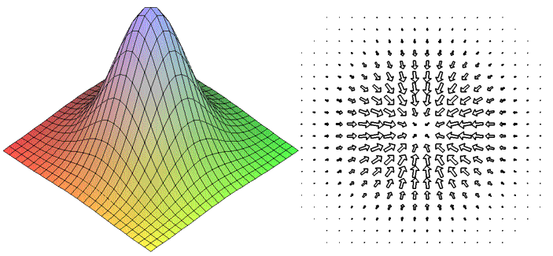

Изучить различные методы безусловной многомерной минимизации, провести их сравнение.
многомерной оптимизации является минимизация функции U=f(Х1,Х2,…,Хm) от m переменных Х1,Х2,…,Хm.
Множество точек, для которых U=const называется поверхностью уровня, для двух переменных это множество называется линей уровня.
Градиентом функции называют вектор, указывающий направление наибольшего возрастания некоторой величины, он равен частной производной по переменной Xi.
Найти минимум целевой функции f(X1,X2)=2∙X1^2+ X2^2-X1∙X2 с точностью ε=0,01
В алгоритме покоординатного спуска вводятся точки начала поиска и выбирается направление поиска, после чего изменяя шаг и в соответствии с ним переменную, находим значение функции. Снова изменяем направление поиска. Поиск производится до тех пор, пока максимальный модуль разности текущих и предыдущих переменных не будет меньше либо равен заданной точности.
В алгоритме метода простого градиентного спуска шаг является константой, поиск производится до тех пор, пока модуль градиента не будет меньше либо равен точности.
В алгоритме метода наискорейшего спуска шаг изменяется и зависит от угла между векторами перехода.
Результаты минимизации покоординатным методом
Результаты минимизации методом градиентного спуска
Результаты минимизации методом наискорейшего градиентного спуска
Наименьшее количество итераций при поиске было совершено используя метод покоординатного спуска, также при поиске из точки А(2, 1) данный метод оказался наиболее точным. Однако если бы линия уровня имела изломы, что соответствует оврагам на поверхности, то данный метод был бы непригодным.
Использую метод простого градиентного спуска было совершено наибольшее количество итераций. Это обусловлено тем, что шаг в данном методе – константное значение. Недостатком метода является необходимость на каждом шаге вычислять значение градиента, что требует достаточно много времени.
Метод наискорейшего градиентного спуска усевершенствует метод простого спуска, т.к. в нём с каждой итерацией изменяется шаг в зависимости от угла между векторами поиска. Используя метод наискорейшего градиентного спуска, даже находясь на большом удалении от оптимума мы быстрее попадаем в его район, в окрестности которого эффективность метода снижается из-за частой смены направления поиска и приближается к эффективности метода градиента.